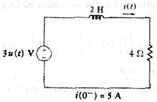

A03 TR analysis: RL circuit with given initial values
Question. Given the following circuit, find a symbolic expression for current through inductor.

Solution:
Label nodes and elements. Define variable cir containing circuit description. I used this description:
"e3,1,0,3,0; l2,1,2,2,5; r4,2,0,4,0" à cir
The fifth term in inductor l2 description is 5 amperes, the initial current through inductor. Except for inductors and capacitors with initial conditions, and operational amplifiers, the fifth term in element description row is always zero.
Simulate this circuit using transient analysis.
sq\tr(cir)
Ask for current you wish.
il2
Answer: The answer Symbulator gives is the right one, and is the first shown in the screen. Up to date, there is no other circuit simulator for any calculator that finds this answer. Symbulator presents it in fraction form. Circuits text book gives the answer using floating point numbers with two decimal digits. You can get the answer this way too, if you set "Display Digits" to "FLOAT 3" and press [green diamond] + [ENTER] instead of [ENTER] alone. This answer presentation is the second shown in the screen.